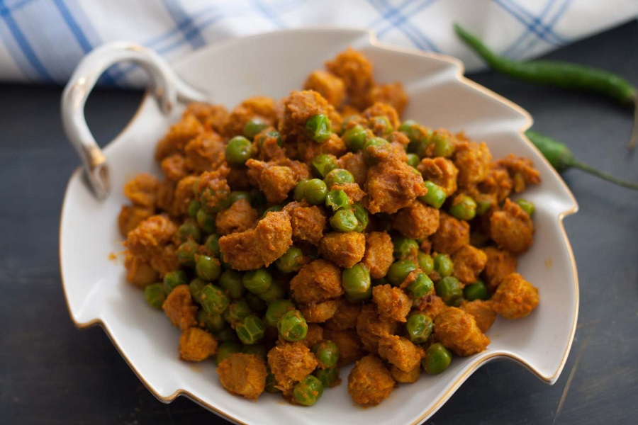

Cook.Insta
Cook.Insta

Schezwan Soya Chunks first
Schezwan Soya Chunks
popular soya
soya karnadhaga food
soya kerala food
soya tamil food
fry
lasy crazy
Our mission at Cookpad is to make everyday cooking fun, because we believe that cooking is key to a happier and healthier life for people, communities and the planet. We empower homecooks all over the world to help each other by sharing recipes and cooking tips. Subscribe to Premium for exclusive features & benefits! Cookpad Communities
🇬🇧 United Kingdom 🇪🇸 España 🇦🇷 Argentina 🇺🇾 Uruguay 🇲🇽 México 🇨🇱 Chile 🇻🇳 Việt Nam 🇹🇭 ไทย 🇮🇩 Indonesia 🇫🇷 France 🇸🇦 السعودية 🇹🇼 臺灣 🇮🇹 Italia 🇮🇷 ایران 🇮🇳 I 🇬🇷 Ελλάδα 🇲🇾 Malaysia 🇵🇹 Portugal 🇺🇦 Україна 🇯🇵 日本 See All